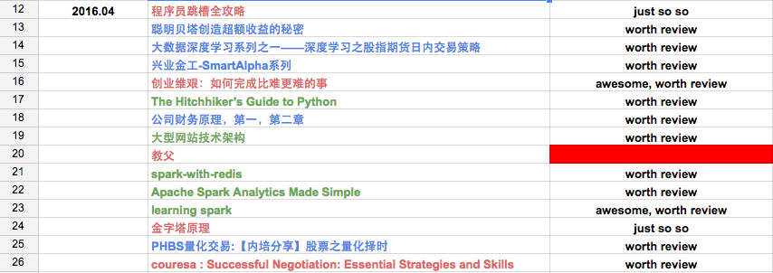

『 读书笔记 』5月读书总结｜博文推荐
2016-05-04
写在前面
计划是每月读 5-10 本书，书籍类型大概是三个方面的：金融，技术，管理。之所以选择这三个方面，一方面是因为自己对这三个方面都很有兴趣，其次是被 linkedin 创始人 Hoffman 的 ABZ 理论 深度影响。建议大家都看看 abz 理论那篇文章，如果我有空，也会整理一些常用的这类理论模型到博客里的。
月底读书总结的形式都很简单，只是简单的一个列表和简单的书评，对觉得比较好的书会有单独的读书笔记。另外推荐大家用 excel 来做一些简单的工作管理，我现在就用 google docs 来做工作安排和读书计划，个人感觉比一些常用的神马协同软件强大太多了，简单，够用，就行了。工作中见过太多人把时间都花到使用那些协同软件上去，不得不说避重就轻了，适得其反，哈哈。
下面是一张我用 google docs 来做本月读书安排的截图，不同颜色代表不同类别的数据，清晰明了实用。

本月看了 11 本书，其中第十本是一些研报的合集，就当是一本了；第十一本是 coursera 上的一门公开课 Successful Negotiation: Essential Strategies and Skills，也当是一本书了。其中有电子书版的都放到亲爱的度娘云里了，个人觉得不错的书都是纸板的，不知道有没有电子版的，推荐好书都看纸版的。
ps: 我对好书的定义很简单：
- 给自己有所启发的
- 高质量的，专业的教程类书籍
- 后期会再度回首的书
- 看完后会打算赠送给盆友看的书
- 留着给儿子看的书 [好吧，目前我只有个宝贝侄儿，哈哈]
- 最后一条，印刷质量要好
上月读书总结：『 读书笔记 』3月读书总结和推荐
1. 读书总结
1.1 Docker 全攻略
随着虚拟化技术的流行，最近两年 docker 也开始变得越来越火，我也看好这个趋势的发展，它的 Build, Ship, and Run Any App, Anywhere 的理念很吸引我，这对与初创起来来说是非常可取的一个早期方案［当然后期也可以］。于是准备最近一两个月系统的了解了解 docker 以及它的生态圈，恰逢公司刚刚新购一批书，里面有一本讲docker的书，就拿来看了。总的来说，这本书让我大失所望，通篇80%的内容都是介绍docker的命令用法，参数说明以及一些多余的口舌去了，太过于铺张浪费。通读下来应该感觉都是那种出版社编辑在 qq，微信群里找一些所谓的技术大拿写的［这还是好的，甚至有的出版社编辑直接找大学生写书了；我大三的时候还有一个叫源智天下的出版社找我写单片机的书］。真是不明白为什么有的人会写这种书，说实话，就算是七拼八凑，那性价比也是很低的。一本 500 页的书，顶多能拿个 2～3w 的稿酬，真心没必要。
书籍内容：全书 534 页，其中 28-467 页全是讲 docker 命令，而且都是官方文档
最后问了下公司的 docker 大神，他推荐直接官网 ＋ http://dockone.io/ 这个 docker 社区。
总结：如果你闲得蛋疼的话，来读这本书吧。
推荐指数：``